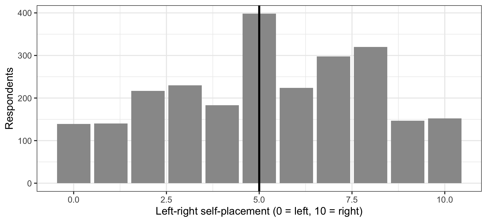
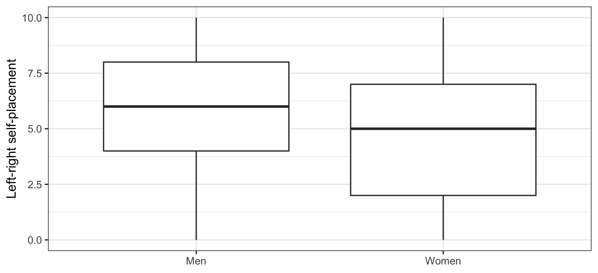

library(ggplot2)
library(dplyr)
swe <- readRDS("data/swe.rds")
swe$sex <- factor(
swe$female,
levels = c(0, 1),
labels = c("Men", "Women")
)8 Comparing means
Last week: two categorical variables. This week: one categorical and one continuous. Does the average differ between groups?
Three versions of the question, in order of how much they ask for.
8.1 One group against a fixed number
The simplest case. The left-right scale runs from 0 to 10, so its midpoint is 5. Do Swedes on average sit at the midpoint?
Look first.
ggplot(swe, aes(x = lr_self)) +
geom_bar(fill = "grey60") +
geom_vline(xintercept = 5, linewidth = 1) +
labs(
x = "Left-right self-placement (0 = left, 10 = right)",
y = "Respondents"
) +
theme_bw()
A big spike at 5 and a slight lean to the right. The mean:
mean(swe$lr_self, na.rm = TRUE)## [1] 5.236525.24 against a midpoint of 5. That is a gap of 0.24 on an eleven-point scale.
The one-sample t-test asks whether a gap that size could be sampling noise. mu is the value being tested against.
t.test(swe$lr_self, mu = 5)##
## One Sample t-test
##
## data: swe$lr_self
## t = 4.1906, df = 2447, p-value = 2.881e-05
## alternative hypothesis: true mean is not equal to 5
## 95 percent confidence interval:
## 5.125844 5.347195
## sample estimates:
## mean of x
## 5.23652Read the output line by line, because every t-test in R prints the same shape.
t = 4.1906— the test statistic, and it is the ratio from last week: the gap divided by its standard error. A gap of 0.24 is about 4.2 standard errors from zero.df = 2447— degrees of freedom, here \(n - 1\).p-value = 2.881e-05— in scientific notation, 0.0000288. Well below 0.05.95 percent confidence interval— from 5.13 to 5.35. This is the interval for the mean, not for the difference. It excludes 5, which is the same conclusion the p-value reaches.mean of x— the estimate itself.
So Swedes do not sit at the midpoint. Statistically.
8.1.1 Significant is not the same as important
Now look at what we have actually found. The average Swede sits 0.24 of one point to the right of centre, on a scale with eleven positions. Nobody can place themselves at 5.24; the scale does not have that option.
The result is highly significant and substantively almost nothing. Both statements are true, and they are not in tension — the p-value answers “could this be chance?”, and with 2448 respondents the answer to that is no for very small differences.
What we need alongside it is a measure of how big. The standard one is Cohen’s d: the difference expressed in standard deviations.
\[d = \frac{\text{difference between the means}}{\text{standard deviation}}\]
gap <- mean(swe$lr_self, na.rm = TRUE) - 5
gap / sd(swe$lr_self, na.rm = TRUE)## [1] 0.084697690.085 standard deviations. The rough convention is that 0.2 is small, 0.5 is medium and 0.8 is large, so this is well below small.
The effectsize package computes it with a confidence interval.
library(effectsize)
cohens_d(swe$lr_self, mu = 5)## Cohen's d | 95% CI
## ------------------------
## 0.08 | [0.05, 0.12]
##
## - Deviation from a difference of 5.Report both, always. A p-value tells you whether an effect is distinguishable from zero. An effect size tells you whether it is worth caring about. In a large sample the first is easy and the second is not, and a paper that reports only the first is telling you the less interesting half.
8.2 Two independent groups
Now two separate sets of people. Do men and women place themselves differently?
swe |>
filter(!is.na(sex)) |>
ggplot(aes(x = sex, y = lr_self)) +
geom_boxplot() +
labs(
x = NULL,
y = "Left-right self-placement"
) +
theme_bw()
swe |>
filter(!is.na(sex), !is.na(lr_self)) |>
group_by(sex) |>
summarise(
n = n(),
mean = mean(lr_self),
sd = sd(lr_self)
)## # A tibble: 2 × 4
## sex n mean sd
## <fct> <int> <dbl> <dbl>
## 1 Men 1199 5.64 2.70
## 2 Women 1249 4.85 2.83The independent samples t-test uses R’s formula notation: the continuous variable, then ~, then the grouping variable. Read ~ as “by”.
t.test(lr_self ~ sex, data = swe)##
## Welch Two Sample t-test
##
## data: lr_self by sex
## t = 7.0454, df = 2446, p-value = 2.395e-12
## alternative hypothesis: true difference in means between group Men and group Women is not equal to 0
## 95 percent confidence interval:
## 0.567919 1.005983
## sample estimates:
## mean in group Men mean in group Women
## 5.638032 4.851081data = swe says where to find the variables named in the formula, which is why they appear without swe$.
The confidence interval now refers to the difference between the two means: from 0.57 to 1.01. It does not contain zero, so the difference is distinguishable from none.
The order matters for the sign. R subtracts the second group’s mean from the first, following the factor levels — here Men minus Women, so the positive interval means men place themselves further right.
8.2.1 Welch, and why R chose it
Notice R called it a Welch test and gave a fractional df. The older Student’s t-test assumes both groups have the same variance; Welch’s does not.
R uses Welch by default, which is the right default: when the variances are equal it gives essentially the same answer, and when they are not it gives the correct one. You can force the older version with var.equal = TRUE, and there is rarely a reason to.
cohens_d(lr_self ~ sex, data = swe)## Cohen's d | 95% CI
## ------------------------
## 0.28 | [0.20, 0.36]
##
## - Estimated using pooled SD.0.28 — small, and this time not negligible. A difference you would notice in aggregate but could not use to guess any individual’s politics.
8.3 The same people measured twice
The third case, and the one that most often gets done wrong.
Sometimes the two numbers come from the same respondents. Our survey asked people to rate every party from 0 to 10, and separately to rate every party leader. So for each respondent we have both a party score and a leader score.
Do people rate leaders differently from their parties?
swe |>
summarise(
party = mean(like_s, na.rm = TRUE),
leader = mean(lead_andersson, na.rm = TRUE)
)## # A tibble: 1 × 2
## party leader
## <dbl> <dbl>
## 1 6.33 6.97The Social Democrats score 6.33; Magdalena Andersson scores 6.97.
The paired t-test uses paired = TRUE, and it works on the differences — one difference per respondent — rather than on the two sets of scores separately.
t.test(swe$like_s, swe$lead_andersson, paired = TRUE)##
## Paired t-test
##
## data: swe$like_s and swe$lead_andersson
## t = -19.273, df = 2537, p-value < 2.2e-16
## alternative hypothesis: true mean difference is not equal to 0
## 95 percent confidence interval:
## -0.7344944 -0.5988389
## sample estimates:
## mean difference
## -0.6666667mean difference is now a single number: -0.67. Andersson is rated about two thirds of a point higher than her party.
8.3.1 Why pairing matters
It is tempting to think the paired test is just a convenience. It is not — it answers a different question and it is far more sensitive.
An independent test would compare the spread of party scores against the spread of leader scores, and both are wide: some people love the Social Democrats and some detest them. The paired test throws all of that away. It only asks, for each person, which of their two scores is higher. The between-person variation that dominates the unpaired comparison cancels out entirely.
Use the paired version whenever the two numbers come from the same unit. Using an independent test on paired data throws away the pairing and usually hides a real effect.
The opposite mistake matters just as much. Using a paired test on data that is not paired — two different sets of people who happen to be the same size — is simply invalid. The pairing has to be real.
8.3.2 All eight parties
The multiparty data makes this more interesting than one comparison.
pairs <- tibble(
party = c("V", "MP", "S", "C", "L", "KD", "M", "SD"),
party_var = c("like_v", "like_mp", "like_s", "like_c",
"like_l", "like_kd", "like_m", "like_sd"),
leader_var = c("lead_dadgostar", "lead_stenevi", "lead_andersson",
"lead_loof", "lead_pehrson", "lead_busch",
"lead_kristersson", "lead_akesson")
)
results <- pairs
for (i in seq_len(nrow(pairs))) {
party_score <- swe[[pairs$party_var[i]]]
leader_score <- swe[[pairs$leader_var[i]]]
test <- t.test(leader_score, party_score, paired = TRUE)
results$party_mean[i] <- mean(party_score, na.rm = TRUE)
results$leader_mean[i] <- mean(leader_score, na.rm = TRUE)
results$difference[i] <- test$estimate
results$p[i] <- test$p.value
}
results |>
select(party, party_mean, leader_mean, difference, p) |>
mutate(across(c(party_mean, leader_mean, difference), \(x) round(x, 2))) |>
mutate(p = round(p, 4))## # A tibble: 8 × 5
## party party_mean leader_mean difference p
## <chr> <dbl> <dbl> <dbl> <dbl>
## 1 V 4.03 4.4 0.4 0
## 2 MP 4.01 3.65 -0.31 0
## 3 S 6.33 6.97 0.67 0
## 4 C 4.91 5.09 0.19 0
## 5 L 4.71 4.79 0.06 0.0881
## 6 KD 4.15 4.19 0 0.877
## 7 M 5.48 5.19 -0.34 0
## 8 SD 3.41 4.13 0.67 0tibble() builds a data frame; it is the tidyverse version of data.frame() and prints more helpfully. seq_len(nrow(pairs)) makes the sequence 1, 2, 3, … up to the number of rows, which is the safe way to write a loop — unlike 1:nrow(pairs), it does the right thing if the data frame is ever empty.
Six of the eight leaders are rated differently from their parties, and the direction is not the same for all of them. Andersson and Åkesson both run ahead of their parties; Kristersson and Stenevi run behind. For the Christian Democrats and the Liberals there is no detectable gap at all.
A question. The Sweden Democrats are the least liked party in the data at 3.41, and Jimmie Åkesson is rated 4.13 — clearly higher than his own party.
Give two different explanations for that gap that the data here cannot distinguish between. What would you need in order to tell them apart?
8.4 More than two groups
With three or more groups, running a t-test on every pair is the wrong move: each test has its own chance of a false positive, and with enough pairs one of them will fire.
The tool is analysis of variance, and the question it asks is whether any of the group means differ.
model <- aov(lr_self ~ ses, data = swe)
summary(model)## Df Sum Sq Mean Sq F value Pr(>F)
## ses 3 514 171.24 22.58 2.13e-14 ***
## Residuals 2194 16637 7.58
## ---
## Signif. codes: 0 '***' 0.001 '**' 0.01 '*' 0.05 '.' 0.1 ' ' 1
## 647 observations deleted due to missingnessaov() fits the model, and summary() prints the test. Pr(>F) is the p-value. Small, so the four social-class groups do not all place themselves in the same place.
That is all it says. It does not say which groups differ — for that you need follow-up comparisons that correct for having made several.
ANOVA is a special case of regression, which starts in session 11, and it is easier to understand from that direction than on its own. Treat this as a signpost rather than a topic.
8.5 What the t-test assumes
Three things.
Independent observations, within each group. One row per person.
Roughly normal data — or a large enough sample. The test is about the sampling distribution of the mean, and from session 6 you know that comes out bell-shaped almost regardless of the shape of the variable, provided there are enough cases. With thousands of respondents this assumption is not worth worrying about. With twenty it is.
A continuous outcome. lr_self has eleven ordered categories, which by the rule from session 2 is enough to treat as continuous. satdem, with four, is not — and a mean of a four-point scale should be treated with suspicion whatever R is willing to compute.
A question. This chapter has taken the mean of lr_self, an eleven-point scale, without comment.
What has to be true about the distances between 3 and 4, and between 7 and 8, for that mean to mean anything? Is it true? Does the same answer apply to a four-point trust scale?
How to write it up.
One sample:
Swedish respondents placed themselves slightly to the right of the scale midpoint (M = 5.24, SD = 2.79), t(2447) = 4.19, p < .001. The difference from the midpoint was negligible in size (d = 0.08).
Two groups:
Men placed themselves further right (M = 5.64) than women (M = 4.85), a difference of 0.79 points, 95% CI [0.57, 1.01], t(2446.0) = 7.05, p < .001, d = 0.28.
Give the means, the difference with its confidence interval, the test, and an effect size. Mistakes to avoid:
- Reporting p without the means. The reader cannot tell which group was higher, or by how much.
- Omitting the effect size. In a sample this size everything is significant.
- Using an independent test on paired data. It discards the pairing and usually hides the effect.
- Using a paired test on unpaired data. Invalid, whatever R prints.
- Reporting
p = 0. R prints2.2e-16because that is its smallest representable value, not because the probability is zero. Write p < .001. - Running t-tests on every pair of several groups without correcting for it.
- Taking the mean of a four-point scale and treating it as a measurement.
In the seminar. swirl lesson 08 Comparing Means. One-sample, independent and paired t-tests, reading the output, and effect sizes. Around 30 minutes.